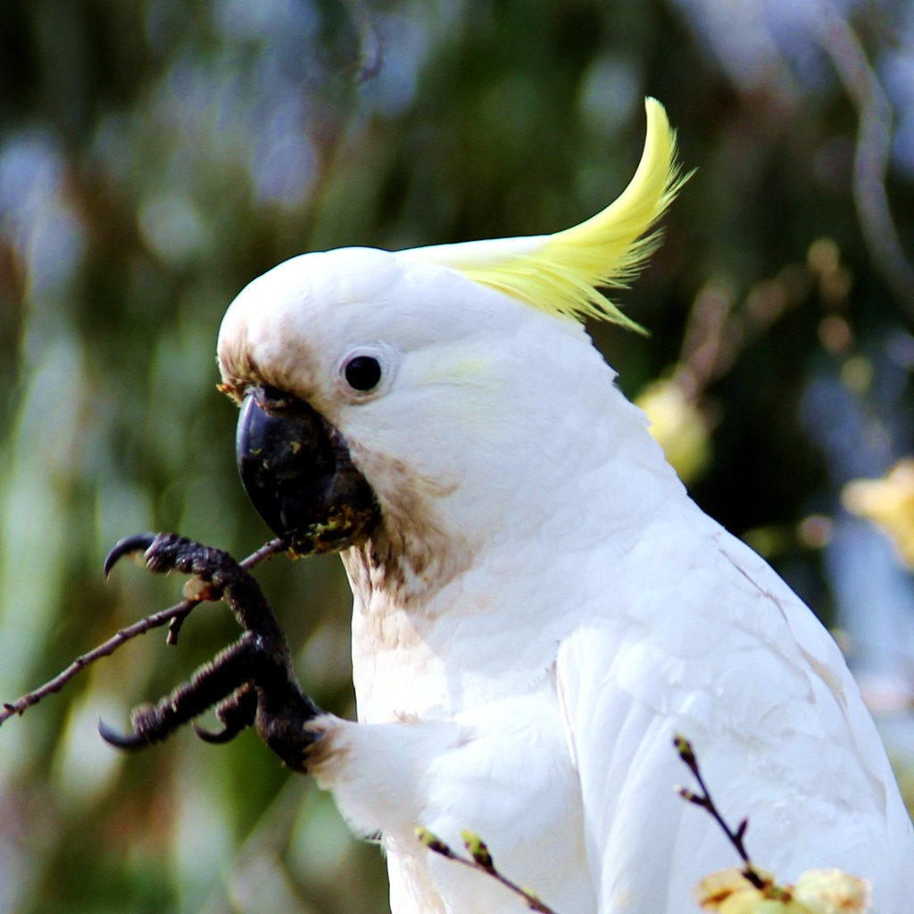

Características da Espécie
Sobre o Cacatua de Cabeça Nua
A cacatua de cabeça nua, reconhecida pelo anel de pele azul-claro ao redor dos olhos que lhe dá o nome característico, é uma das espécies de cacatua mais docéis e acessíveis para tutores com experiência moderada em psitacídeos. Ao contrário das cacatuas de crista amarela (reconhecidamente exigentes em termos emocionais), a cacatua de cabeça nua tem um temperamento mais equilibrado e adaptável.
Nativa da Austrália (especialmente do interior árido e semi-árido), esta espécie desenvolveu uma grande capacidade de adaptação a diferentes condições ambientais. Em cativeiro, reflecte essa adaptabilidade — habitua-se bem a diferentes ambientes domésticos e rotinas, tornando-se uma ave mais "prática" do que algumas das suas primas mais exigentes.
Em termos de dimensão, situa-se entre as cacatuas menores e as grandes — com cerca de 40 cm de comprimento e 350–450 g, é uma ave substancial mas manejável. A sua plumagem é maioritariamente branca, com uma leve tonalidade rosada nas bochechas e uma crista branca discreta que ereciona em momentos de excitação.
É uma excelente opção para famílias com alguma experiência prévia em papagaios médios ou grandes que desejam ter uma cacatua sem os desafios extremos que a crista amarela pode apresentar. A Paraíso de Aves disponibiliza exemplares criados à mão com toda a documentação CITES e garantia de saúde.
Temperamento e Inteligência
A cacatua de cabeça nua tem um temperamento frequentemente descrito como "equilibrado" — é afectuosa sem ser excessivamente dependente, curiosa sem ser destrutiva em excesso, e vocal sem atingir os picos de ruído das cacatuas maiores. Esta combinação torna-a uma companheira agradável para tutores que valorizam uma ave carinhosa mas com maior grau de independência.
É uma ave muito curiosa e inteligente, que aprecia explorar o ambiente, manipular objectos com o bico e as patas, e resolver puzzles simples. O seu interesse pelo mundo ao seu redor é genuíno e torna as sessões de enriquecimento particularmente gratificantes.
Sociabilidade
Geralmente dá-se bem com toda a família e adapta-se melhor do que a maioria das cacatuas a rotinas com alguma variação. Pode ser uma boa opção para famílias onde nem todos os membros têm a mesma disponibilidade diária — ao contrário da crista amarela, não colapsa emocionalmente face a pequenas variações na atenção recebida.
Alimentação
A dieta da cacatua de cabeça nua deve ser equilibrada e variada, com especial atenção ao controlo de gordura — como todas as cacatuas, é susceptível à lipidose hepática em dietas muito ricas em sementes.
- Pellets para cacatuas pequenas/médias: 50–60% da dieta
- Vegetais frescos: Cenoura, pimento, brócolo, couve, abóbora
- Frutas: Maçã, pera, frutos silvestres, kiwi — com moderação
- Sementes: Mix de sementes de qualidade, mas em quantidade limitada (não mais de 15% da dieta)
- Osso de sépia: Disponível permanentemente como fonte de cálcio
A cacatua de cabeça nua aprecia especialmente alimentos de textura crocante — cenoura crua, espiga de milho, noz com casca — que satisfazem o seu instinto natural de mascar e desgastam o bico adequadamente.
Jaula e Habitat
Para uma cacatua de cabeça nua adulta, recomenda-se uma jaula de no mínimo 80 cm × 60 cm × 110 cm. Sendo uma espécie de tamanho médio, tem requisitos menos extremos do que as cacatuas grandes, mas ainda assim necessita de espaço suficiente para se exercitar.
- Varões espaçados entre 2 e 2,5 cm (para segurança das patas)
- Poleiros de madeira natural de diferentes diâmetros
- Pelo menos 3 tipos diferentes de brinquedos em rotação
- Baloiço — esta espécie é particularmente apreciadora
A cacatua de cabeça nua produz menos pó de plumagem do que a cacatua de crista amarela, o que a torna mais adequada para tutores com sensibilidade respiratória. Ainda assim, boa ventilação do espaço é sempre recomendada.
Cuidados Diários e Exercício
A cacatua de cabeça nua necessita de pelo menos 2 a 4 horas de interacção diária fora da jaula. É menos exigente em termos de contacto constante do que a crista amarela, mas ainda assim requer atenção regular e estimulação para manter o equilíbrio emocional.
O banho deve ser oferecido 2 vezes por semana com spray de água morna. Estas cacatuas apreciam especialmente banhos em dias quentes — em Portugal, durante o verão, pode oferecer banhos mais frequentes para ajudar na termorregulação.
Treino e Estimulação
Sessões diárias de treino por reforço positivo (10–15 minutos) são altamente recomendadas. Esta espécie aprende comandos básicos (subir para o braço, descer, virar) com facilidade e o treino fortalece significativamente o vínculo tutor-ave.
Saúde e Veterinário
A cacatua de cabeça nua é geralmente uma ave saudável e resistente, mas partilha com outras cacatuas algumas susceptibilidades específicas:
- Lipidose hepática: Risco em dietas ricas em sementes. Prevenção através de dieta equilibrada com pellets como base.
- PBFD: Vírus que afecta penas e bico. Detecção por análise de sangue anual.
- Depenamento: Geralmente associado a stress ou falta de estimulação. Menos frequente nesta espécie do que na crista amarela.
Consulta veterinária anual com especialista em aves exóticas é suficiente para manutenção preventiva da saúde desta espécie.
Documentação CITES e Legislação em Portugal
A cacatua de cabeça nua está incluída no Apêndice II da CITES. Em Portugal, a documentação de criador registado é obrigatória para qualquer exemplar em posse doméstica.
A Paraíso de Aves fornece toda a documentação necessária: certificado CITES II, anilha de identificação, certificado veterinário e registo do estabelecimento de criação. Todos os documentos são válidos em toda a União Europeia, incluindo Portugal.
Entrega em Portugal e Processo de Reserva
Entregamos cacatuas de cabeça nua em todo Portugal — continental, Madeira e Açores. A entrega para Portugal continental demora geralmente 1 a 3 dias úteis. Para as ilhas, o transporte aéreo implica prazos e documentação adicionais.
Contacte-nos pelo formulário desta página para verificar disponibilidade e obter um orçamento detalhado com todos os custos incluídos.
Por que Escolher a Paraíso de Aves?
Criador Certificado CITES
Núcleo zoológico registado oficialmente. Documentação CITES 100% legal e rastreável.
CITES Oficial
Toda a documentação legal CITES incluída no preço.
Criados à Mão
Socializados desde bebés para máxima confiança.
Entrega Segura
Envio certificado para qualquer ponto de Portugal.
Garantia de Saúde
Certificado veterinário e acompanhamento pós-venda.
Apoio Personalizado
Aconselhamento antes e depois da adopção.
Perguntas Frequentes sobre o Cacatua de Cabeça Nua
Espécies Relacionadas
Interessado em Adoptar um Cacatua de Cabeça Nua?
Contacte-nos para verificar disponibilidade e iniciar o processo de reserva. Entregamos em todo Portugal continental, Madeira e Açores.
Solicitar Disponibilidade Enviar E-mail